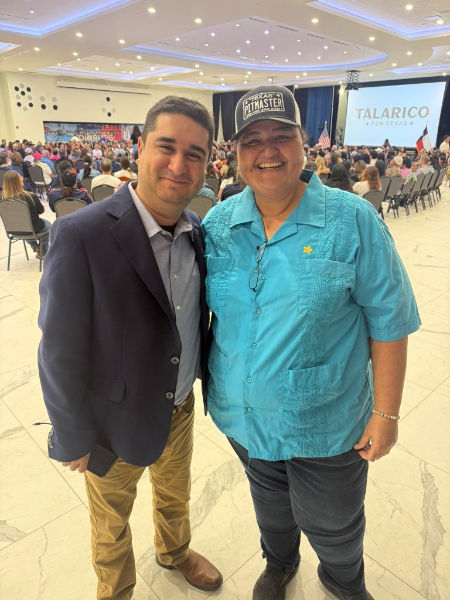
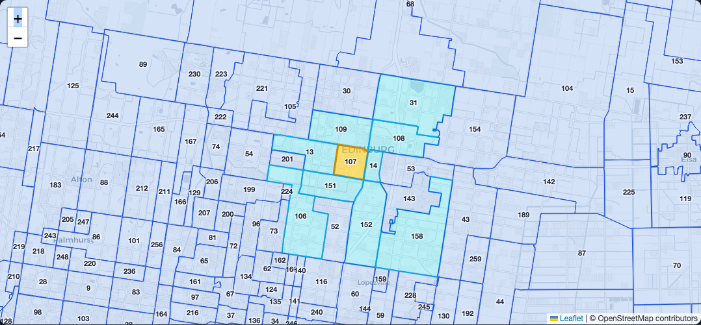
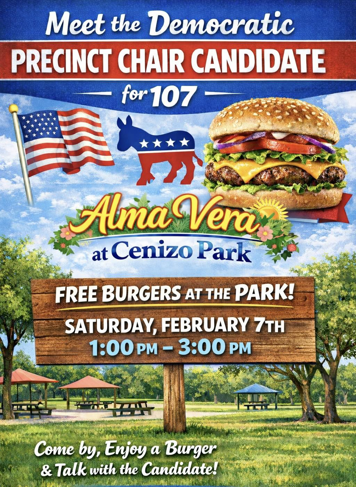
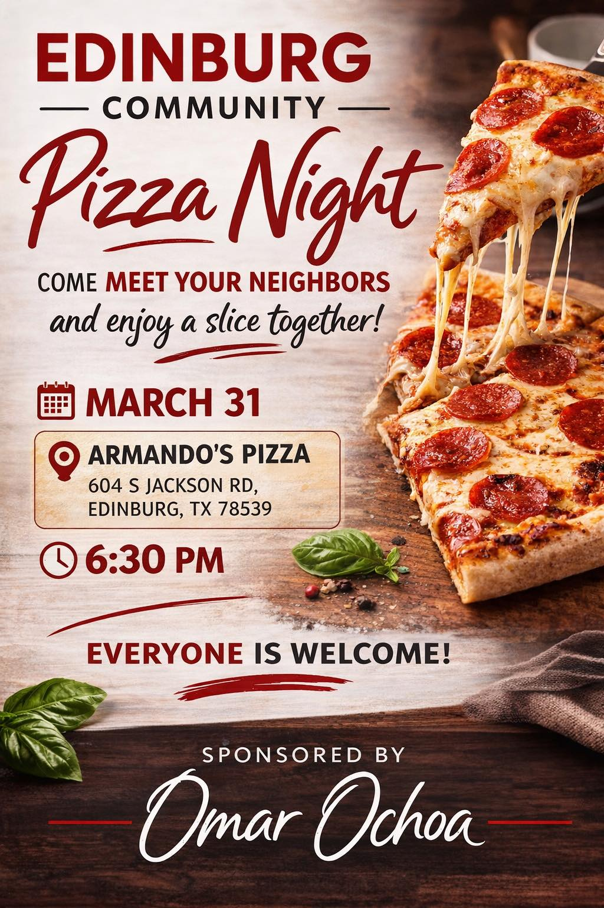

Precinct 107: Grassroots Organizing
A Strategic Case Study in Base Building
The Leadership Network

Neighborhood Captain Jason Delattre (left) and Precinct Chair Alma Vera (right)
Alma Vera doesn't do it alone. She has established a multi-tiered leadership structure utilizing the official TDP Precinct Chair model. By recruiting Neighborhood Captains (Chris Vera, Jason Delattre) who in turn recruit Block Workers, the work is distributed. Nobody is overwhelmed, and the network grows exponentially.
Election Cycle Performance
The Impact
A Precinct Chair's power scales dramatically depending on the election cycle. In a low-turnout election like the recent Primary Runoff, Precinct 107 turned out exactly 162 voters. Because Chair Alma Vera and her team have cultivated a direct network of over 74 consistent voters, they effectively command ~45% of the required primary turnout. In a local race, that margin doesn't just win elections—it completely locks out the opposition.
When looking ahead to larger cycles, the ceiling expands significantly. During the 2022 Midterm, 913 voters cast ballots. In the 2024 Presidential Election, that number surged to an impressive 1,236 ballots out of 2,371 registered voters (a 52.13% turnout). By building infrastructure during the quiet runoff periods, Alma ensures that her organized base will act as the vanguard to rally hundreds of these "surge" voters in November.
Precinct Map
Neighborhood Level Detail

When zooming into the street-level boundaries of Precinct 107, you can see exactly how it interfaces with the surrounding community. Precinct 107 touches six other neighboring precincts (13, 14, 108, 109, 151, and 152). A truly effective Precinct Chair doesn't just stop at their own borders—they build functioning relationships with the Precinct Chairs in those adjacent districts.
For Alma, this means she can directly call Celeste Iris Flores (Pct 13), Mary Alice Palacios (Pct 14), María E. Mendoza (Pct 109), and José Frank Pérez (Pct 151). She also has an immediate geographic goal: recruiting new chairs for the vacant Precincts 108 and 152 next door. By joining forces, Alma and these adjacent chairs can form a localized "Northside Team" or "Edinburg Team." They can co-host block parties on shared border streets, pool resources for highly localized "Get Out The Vote" (GOTV) drives, and build a unified regional coalition that transforms a single precinct's success into a massive, unstoppable regional voting bloc.
The Precinct Chair Lifestyle
Reading the Texas Election Code can make the role of a Precinct Chair sound like a dry, bureaucratic job. In reality? It is an incredibly fun, highly social lifestyle. It is about drinking coffee with your Captains after a Saturday morning blockwalk. It is about throwing neighborhood block parties, manning a table outside a Democratic-friendly local business, and getting to know the families on your street.

A perfect example of this is how Alma campaigned for her position. Instead of relying solely on phone calls or door knocking, she hosted a "Free Burgers at the Park" event at Cenizo Park. By inviting her neighbors out for a casual, highly social afternoon of good food and conversation, she wasn't just asking for a vote—she was building a community. This is exactly what any Precinct Chair can do to break the ice and build a fiercely loyal local network.
The Ultimate Political Connector
Being a Precinct Chair offers a ginormous social benefit. A Chair doesn't just connect downwards to their voters; they connect laterally and upwards to the highest levels of government. Alma is deeply connected to her 74+ local voters, but she is also a key contact for roughly 50 elected officials ranging from the city and county to the state and national levels.

A prime example is Alma's close working relationship with Edinburg's new Mayor, Omar Ochoa. After winning her election, Alma partnered with the Mayor to host an "Edinburg Community Pizza Night" right in her precinct. By bridging the gap between her neighbors and the highest office in the city over a slice of pizza, she cemented her role as the ultimate political connector.
The "Power of 20" Data Model
To hit our voter targets, each Neighborhood Captain is empowered with "Power of 20" sheets. The goal is to collect First Name, Last Name, Phone, Email, and Address for 20 voters, which are then systematically uploaded to the Texas Voter Activation Network (VAN) by the data team.